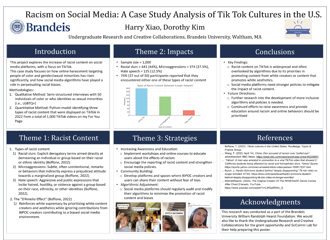
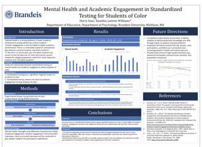

Harry (Youkang) Xiao
About
I am a senior at Brandeis University majoring in Psychology and Economics, with a minor in Women’s, Gender, and Sexuality Studies. I will graduate in May 2025 and begin my doctoral studies in School Psychology at the University of California, Berkeley under the mentorship of Dr. Frank C. Worrell.
My research interests broadly center on identity development, the role of contextual and social factors in shaping students’ academic achievement and mental health, and the evaluation of culturally responsive interventions that promote equitable learning outcomes and healthy developmental trajectories—particularly among historically marginalized student populations.
Please feel free to reach out if you'd like to connect or collaborate!
News
- March 2025 — Inducted into Phi Beta Kappa, the nation’s oldest academic honor society
- October 2024 — Published blog article The True Cost of Standardized Testing on ASCD
- August 2024 — Joined the Student-Centered Religious Learning and Literacy (SCRoLL) Lab (PI: Ziva R. Hassenfeld, PhD)
- August 2024 — Presented “Beyond the Scores” at SciFest XIII at Brandeis
- June 2024 — Accepted paper “An Analysis of the Educational Economics Dynamics of Chinese Immigrant Community in San Francisco in the Late 19th Century” to the 2024 International Symposium on Digital Economy and International Trade
- April 2024 — Joined the Social Interaction and Motivation (SIM) Lab at Brandeis University (PI: Jennifer Gutsell, PhD)
- September 2023 — Began research assistantship at the Cohen Center for Modern Jewish Studies (PI: Leonard Saxe, PhD)
- May 2023 — Presented “Racism on Social Media” at the 2023 Brandeis Undergraduate Research Symposium
- October 2022 — Began research assistantship on the RaceB4Race project in partnership with Arizona State University’s Center for Medieval and Renaissance Studies (PI: Dorothy Kim, PhD)
Publications & Presentations
- Xiao, H. (2024, October). The True Cost of Standardized Testing. Association for Supervision and Curriculum Development, Educational Leader. Available here
- Xiao, H., Wang, I., & Zhao, N. (accepted, June 2024). An Analysis of the Educational Economics Dynamics of Chinese Immigrant Community in San Francisco in the Late 19th Century. The 2024 International Symposium on Digital Economy and International Trade, ISDEIT 358.
- Xiao, H. (2024, August 8). “Beyond the Scores”: Mental Health and Academic Engagement in Standardized Testing for Students of Color. Poster presented at SciFest XIII, Brandeis University.

- Xiao, H. (2023, May 4). “Racism on Social Media”: A Case Study Analysis of TikTok Cultures in the U.S. Poster presented at the 2023 Brandeis Undergraduate Research Symposium.

CV
Click here to view my CV
Contact